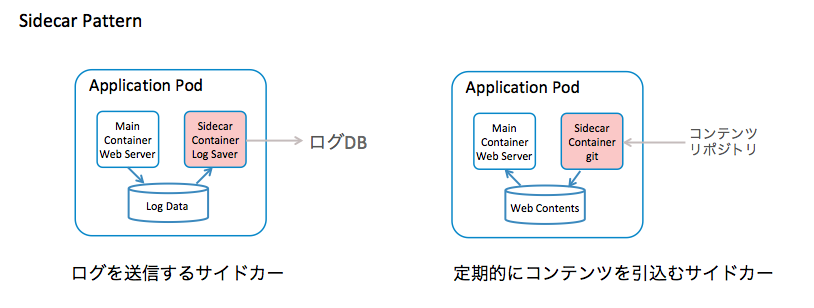

pod, replicaset, service, deployment
$ kubectl get all
NAME READY STATUS RESTARTS AGE
pod/backend-app-89b68f9fc-gj94v 1/1 Running 0 45h
pod/backend-app-89b68f9fc-mrbn2 1/1 Running 0 45h
pod/batch-app-28144040-wzh89 0/1 CrashLoopBackOff 3 (20s ago) 63s
NAME TYPE CLUSTER-IP EXTERNAL-IP PORT(S) AGE
service/backend-app-service LoadBalancer 10.100.61.85 a159eb0af247f42e994342dab57d432a-47984927.ap-northeast-1.elb.amazonaws.com 8080:30893/TCP 45h
NAME READY UP-TO-DATE AVAILABLE AGE
deployment.apps/backend-app 2/2 2 2 46h
NAME DESIRED CURRENT READY AGE
replicaset.apps/backend-app-89b68f9fc 2 2 2 46h
NAME SCHEDULE SUSPEND ACTIVE LAST SCHEDULE AGE
cronjob.batch/batch-app */5 * * * * False 1 63s 17m
NAME COMPLETIONS DURATION AGE
job.batch/batch-app-28144035 0/1 6m3s 6m3s
job.batch/batch-app-28144040 0/1 63s 63s
Nginxコンテナを単体で動かす場合の設定ファイル
apiVersion: v1 // マニフェストファイルの仕様のバージョン
kind: Pod // オブジェクトの種類
metadata:
name: nginx-pod // Podの名前を指定
labels:
app: nginx-app // Podに対するラベル
spec:
containers: // このPodに属するコンテナ
- name: nginx-container
image: nginx
ports:
- containerPort: 80 // コンテナが公開するポート
k8sにおけるラベルはリソースの識別に利用される
DeveopmentやServiceのマニフェストのselecter項目に対象とするPodのラベルを指定する
複数コンテナを含むPodは本書では利用していない
1つのPodに含まれるコンテナは
これらのコンテナは必ずセットで起動・停止される
同時に利用される場合のデザインパターンは以下のようなものがある

デザインパターンの記事: https://qiita.com/MahoTakara/items/03fc0afe29379026c1f3
Pod初期化用コンテナは以下の利用目的
APIアプリケーションの場合、Deploymentがk8sクラスターに登録されると、 ReplicaSetが作られ、ResplicaSetからPodが作られ、Podの中でコンテナが動くという仕組みになっている
Podを用いればk8s cluster上でプログラムを動かせるが、ウェブアプリケーションを動かす場合はPodを直接デプロイすることはそうない
通常直接PodをデプロイしないでDevelopmentというオブジェクトを作り、間接的にPodをデプロイする
Deploymentを用いてアプリケーションをデプロイすると有効Pod数を維持するようにPodを自動で増減してくれる
Delopoymentを利用することで直接Podをデプロイしたのでは実現できない様々な非機能的な処理をk8sの仕組みで行うことができる

apiVersion: apps/v1 // マニフェストファイルのバージョン
kind: Deployment // オブジェクトの種類
metadata:
name: backend-app // Deploymentの名前を指定
labels:
app: backend-app // Deploymentに対するラベル
spec:
replicas: 2 // Deploymentを通じてクラスター内にデプロイされるPodの数を指定
selector: / selecterのmatchLabelsはラベルと同様のものを指定
matchLabels:
app: backend-app
template: // Deploymentを通じてデプロイするPodの定義
metadata:
labels:
app: backend-app // ラベル名
spec:
containers:
- name: backend-app // コンテナ名
image: 761624429622.dkr.ecr.ap-northeast-1.amazonaws.com/k8sbook/backend-app:1.1.0 // コンテナイメージ名
imagePullPolicy: Always
ports:
- containerPort: 8080 // コンテナが公開するポートを指定
env: // 本Podで仕様する環境変数をSecretというオブジェクトを用いて設定するための記述
- name: DB_URL
valueFrom:
secretKeyRef:
key: db-url
name: db-config
- name: DB_USERNAME
valueFrom:
secretKeyRef:
key: db-username
name: db-config
- name: DB_PASSWORD
valueFrom:
secretKeyRef:
key: db-password
name: db-config
readinessProbe: // コンテナが起動したか、正常動作しているかをチェックする仕組み
httpGet:
port: 8080
path: /health
initialDelaySeconds: 15
periodSeconds: 30
livenessProbe: // コンテナが起動したか、正常動作しているかをチェックする仕組み
httpGet:
port: 8080
path: /health
initialDelaySeconds: 30
periodSeconds: 30
resources: // Podが仕様するメモリやCPUなどのリソース量についての定義
requests:
cpu: 100m
memory: 512Mi
limits:
cpu: 250m
memory: 768Mi
lifecycle:
preStop:
exec:
command: ["/bin/sh", "-c", "sleep 2"]
Deploymentが直接Podをデプロイするわけではなく、その間にReplicaSetという別のオブジェクトが作成されている
Pod数の増減やPod障害時の自動再起動を実質的に実行しているのはReplicaSet
$ kubectl get deployment
NAME READY UP-TO-DATE AVAILABLE AGE
backend-app 2/2 2 2 2d9h
$ kubectl get replicaset
NAME DESIRED CURRENT READY AGE
backend-app-89b68f9fc 2 2 2 2d9h
$ kubectl get pod
NAME READY STATUS RESTARTS AGE
backend-app-89b68f9fc-gj94v 1/1 Running 0 2d9h
backend-app-89b68f9fc-mrbn2 1/1 Running 0 2d9h
kubectl describeコマンドで詳細情報を取得する場合は以下のコマンドを使う
$ kubectl describe リソース種別名 オブジェクト名
$ kubectl describe pod backend-app-89b68f9fc-gj94v
Name: backend-app-89b68f9fc-gj94v // Podの名称
Namespace: eks-work // Podが作成されているNamespace名
Priority: 0
Service Account: default
Node: ip-192-168-1-107.ap-northeast-1.compute.internal/192.168.1.107 // Podが配置されているノード名
Start Time: Tue, 04 Jul 2023 22:37:53 +0900 // Podの起動日時
Labels: app=backend-app // Deploymentの記載したラベル
pod-template-hash=89b68f9fc
Annotations: <none>
Status: Running // Podのステータス
IP: 192.168.1.99 // Podに割り当てられたIPアドレス
IPs:
IP: 192.168.1.99
Controlled By: ReplicaSet/backend-app-89b68f9fc // Podを制御している上位オブジェクト
Containers: // コンテナ単位の状態
backend-app:
Container ID: containerd://018718715bfc2efbbd7e38b98da5df257e0ac8522997e117eca8cb5b0a64d4c0
Image: 761624429622.dkr.ecr.ap-northeast-1.amazonaws.com/k8sbook/backend-app:1.1.0 // コンテナイメージ名
Image ID: 761624429622.dkr.ecr.ap-northeast-1.amazonaws.com/k8sbook/backend-app@sha256:23184d18681afb6957d5699c21c9d22683cacd7d1201c2091b79f13e711ad436
Port: 8080/TCP // コンテナが使用するプロトコルとポート番号
Host Port: 0/TCP
State: Running
Started: Tue, 04 Jul 2023 22:37:54 +0900
Ready: True
Restart Count: 0
Limits: // リソース制限
cpu: 250m
memory: 768Mi
Requests: // リソース制限
cpu: 100m
memory: 512Mi
Liveness: http-get http://:8080/health delay=30s timeout=1s period=30s #success=1 #failure=3 // Podのヘルスチェック Liveness Probe
Readiness: http-get http://:8080/health delay=15s timeout=1s period=30s #success=1 #failure=3 // Podのヘルスチェック Readiness Probe
Environment: // k8sによってこのPodに設定されている環境変数。これはdb-configというsecretから割り当てられている
DB_URL: <set to the key 'db-url' in secret 'db-config'> Optional: false
DB_USERNAME: <set to the key 'db-username' in secret 'db-config'> Optional: false
DB_PASSWORD: <set to the key 'db-password' in secret 'db-config'> Optional: false
Mounts:
/var/run/secrets/kubernetes.io/serviceaccount from kube-api-access-b4j9l (ro)
Conditions:
Type Status
Initialized True
Ready True
ContainersReady True
PodScheduled True
Volumes: // マウントされているボリュームの情報
kube-api-access-b4j9l:
Type: Projected (a volume that contains injected data from multiple sources)
TokenExpirationSeconds: 3607
ConfigMapName: kube-root-ca.crt
ConfigMapOptional: <nil>
DownwardAPI: true
QoS Class: Burstable
Node-Selectors: <none>
Tolerations: node.kubernetes.io/not-ready:NoExecute op=Exists for 300s
node.kubernetes.io/unreachable:NoExecute op=Exists for 300s
Events: <none>
CronJobはk8s上でプログラムを時刻あるいは時間間隔を指定して起動するための仕組み
apiVersion: batch/v1 // CronJobに対するAPIバージョン
kind: CronJob // リソース種別
metadata:
name: batch-app // CronJobの名前
spec:
schedule: "*/5 * * * *" # min hour day-of-month month day-of-week // スケジュール定義
jobTemplate: // jobの定義
spec:
template:
spec:
containers:
- name: batch-app // コンテナの名前
image: ${ECR_HOST}/k8sbook/batch-app:1.0.0 // イメージ
imagePullPolicy: Always
env: // 複数のSecret及びConfigMapから値を取得する
- name: DB_URL
valueFrom:
secretKeyRef:
key: db-url
name: db-config
- name: DB_USERNAME
valueFrom:
secretKeyRef:
key: db-username
name: db-config
- name: DB_PASSWORD
valueFrom:
secretKeyRef:
key: db-password
name: db-config
- name: CLOUD_AWS_CREDENTIALS_ACCESSKEY
valueFrom:
secretKeyRef:
key: aws-accesskey
name: batch-secret-config
- name: CLOUD_AWS_CREDENTIALS_SECRETKEY
valueFrom:
secretKeyRef:
key: aws-secretkey
name: batch-secret-config
- name: CLOUD_AWS_REGION_STATIC
valueFrom:
configMapKeyRef:
key: aws-region
name: batch-app-config
- name: SAMPLE_APP_BATCH_BUCKET_NAME
valueFrom:
configMapKeyRef:
key: bucket-name
name: batch-app-config
- name: SAMPLE_APP_BATCH_FOLDER_NAME
valueFrom:
configMapKeyRef:
key: folder-name
name: batch-app-config
- name: SAMPLE_APP_BATCH_RUN
valueFrom:
configMapKeyRef:
key: batch-run
name: batch-app-config
restartPolicy: OnFailure
CronJobをk8sクラスターに登録して指定した実行時刻が来ると内部的にJobというリソースが作られ、Jobの中でPodが作られる
CronJobの場合、CronJob -> Job -> Podという流れで作られていく

CronJob、Job、Podのそれぞれの守備範囲をはっきりさせておく
Job
Pod
Jobとは一定の処理を行なって完了するタスクを実行するためのリソース
設定内容によっては複数の処理を並行起動することができる
ジョブの実行数を規定するパラメータには .spec.completions .spec.parallelism がある
ジョブの実行パターン
それぞれ.spec.completions .spec.parallelismのパラメータを適切に設定することで実装可能
ジョブのリトライ回数はパラメータは.spec.backoffLimitでデフォルト6
同時実行制御のパラメータは.spec.concurrencyPolicyはでデフォルトは1の「Allow」
k8sドキュメントCron Job Limitationsには以下の記述がある
https://kubernetes.io/docs/concepts/workloads/controllers/cron-jobs/
基本的にはCronJobからは1つの実行タイミングに1つのJobオブジェクトが作成されるものの、
稀ではあるが、CronJobオブジェクトから複数のJobオブジェクトが作成されることがあるため、ジョブは冪等性を持つように作成すべき
k8sクラスターにDaemonSetを登録すると、 その中で定義されたPodがクラスターに所属しているワーカーのーどごとに一つずつ起動される
DaemonSetのユースケースとしてはログ収集用のエージェントを各ノードで立ち上げるというものがある
ReplicaSetを使うことでPodが異常終了した場合でも自動的にPodを再起動したり他のノードに再作成したりして 所定のPod数を維持できる仕組みになっている
つまりReplicaSetからPodが再作成される場合、そのPodは毎回初期状態で起動される
ただし、コンテナが初期状態になるとデータベースのように保持しているデータまで初期化されるのは困る
Podの外にVolumeという形でデータを保持し、Podが再起動された場合でもそれまで使っていたVolumeを引き継ぐ仕組みがStatefulSet
StatefulSetとはk8sがステートフルな状態をもつために必要
Namespaceはコンテナを動かす環境であるクラスターを論理的に分割して管理・運用するためのリソース
k8sでは標準で
の3つのNamespaceが存在すると定義されている
Namespaceは単にリソースをハンチする論理的な区分だけでなくResouceQuoraやNetworkPolicyといった仕組みと併用することで、 リソース使用量やネットワーク通信の制限などを行うことができる
Namespaceの作成
apiVersion: v1
kind: Namespace // リソースの種別
metadata:
name: eks-work // 作成するNamespaceの名前
※ Deploymentの更新とロールバック
複数のPodをServiceで束ねることで単一のDNSでアクセスできるようになる
Serviceを用いていることで正常に稼働しているPodにリクエストを振り分けることができる
apiVersion: v1 // Serviceリソースのバージョン
kind: Service // リソース種別
metadata:
name: backend-app-service // Serviceリソースの名前
spec:
type: LoadBalancer // Serviceの種類
selector:
app: backend-app // Serviceが対象するPodを選択するためのセレクター定義
ports: // サービスにサクセスするためのプロトコルとポート割り当て
- protocol: TCP
port: 8080
targetPort: 8080
LoadBalancerはクラスター外にロードバランサーが作成される
クラウドプロバイダーによるがAWSのEKSの場合はELBのロードバランサー（CLB/NLB）が作成される

~
~
~
~